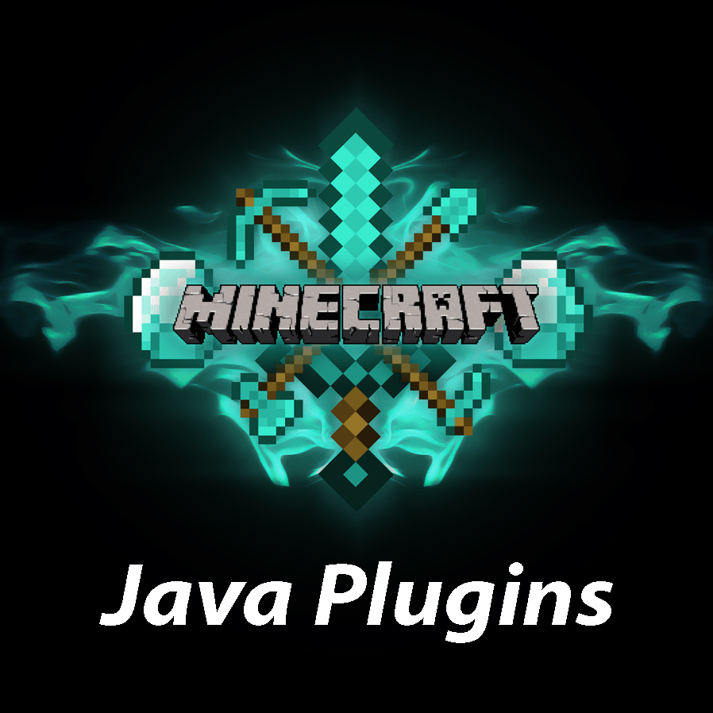

My Projects
 |
The Java HandbookThe Java Handbook is one of my oldest projects, and is meant to be used while coding in Java. The idea is that as I learn the language, I add pages to the program as a form of note taking. That way when I'm coding, I have this program open to easily reference the syntax and usage of a native method. Since its creation, I have continuously added to the program and still update it to this day. Read More |
|  | Minecraft PluginAt the start of my second year of university, I started working with a friend of mine on a plugin for one of our favourite games; Minecraft. We decided we would make use of the Java Spigot API to build a plugin for a minigame to be run on a public server. The game is a recreation of an old mingame that I used to play alot when I was younger. The plugin turned out to be alot more complex than we orginially thought it would be, but works very well and is currently being hosted on our own public server. Read More |
 |
Mobile MinigameDuring my first year of university, I began a project with a highschool friend of mine in which we designed and built a mobile minigame. I was responsible for the coding and my friend created the graphics. We ended up building a simple 2d side-scroller about guiding a space ship through a maze; it's called Cosmic Crash. The game includes a realistic physics engine as well as integrated ad slots. Read More |
 |
The Python HandbookThe Python Handbook is equivalent to the Java Handbook, but for Python. I find it very nice to have programs like this that give me quick refreshers on syntax and modules. The Python Handbook is in it's infancy stages; there is still alot more to add as I become more comfortable with the Python Language. Read More |
 |
Website DesignThis website was created out of boredom from being finished exams and realizing that I had nothing to do. I set off to learn something new by starting a project with the intention of challenging myself. In trying to find something to create that was different from other projects I've done, I realized that I had amassed a folder full of finished projects that I wasn't doing anything with. I figured that it was time to publish some of my best works, and this website is the result. Read More |
 |
TicTacToe AIDuring the 2020 Fall semester, I took a course called Data Structures which explored many different ways of storing data within programming langauges. For the final project of this course, we were asked to make use of the structures we had discussed in order to create a statistical AI that can play TicTacToe. I really enjoyed the content we learned, and at the end of the semester, I had acheived a 100% average in the course. Read More |
Hashtable DatabaseThis was an assignment for the Fall 2020 Data Structures course. Our task was to use hashtables to create a database of information from the IMDB movie database. These hashtables were then used to create a series of searching functions relating to actors and movies. The programs take input from a specific file format created by my professor and generates hashtable files that match keys and values for faster references. Read More |
 |
Data Structure LibrariesThis is a collection of libraries that I wrote for the Fall 2020 Data Structures course. Each assignment in the course was centered around writing a library of functions for manipulating a specific data structure. During the 5 assignments in the course, we covered pointer/byte/bit manipulation, arrays, linked lists, trees, and hashtables. The test files included were written by my professor, but the functions within the libraries were written by myself. Read More |